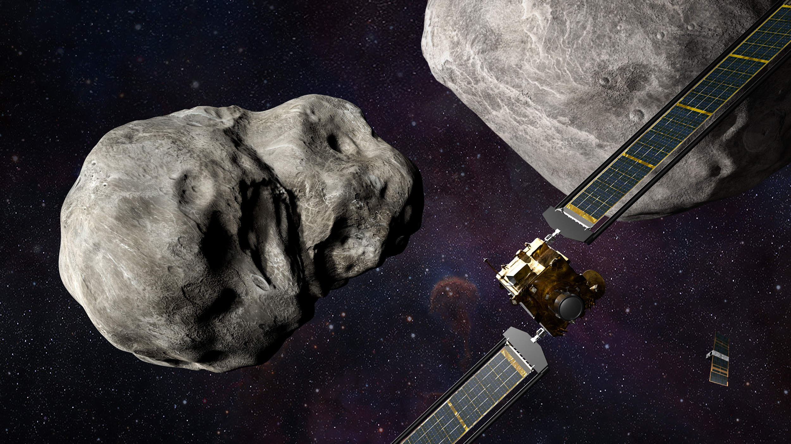
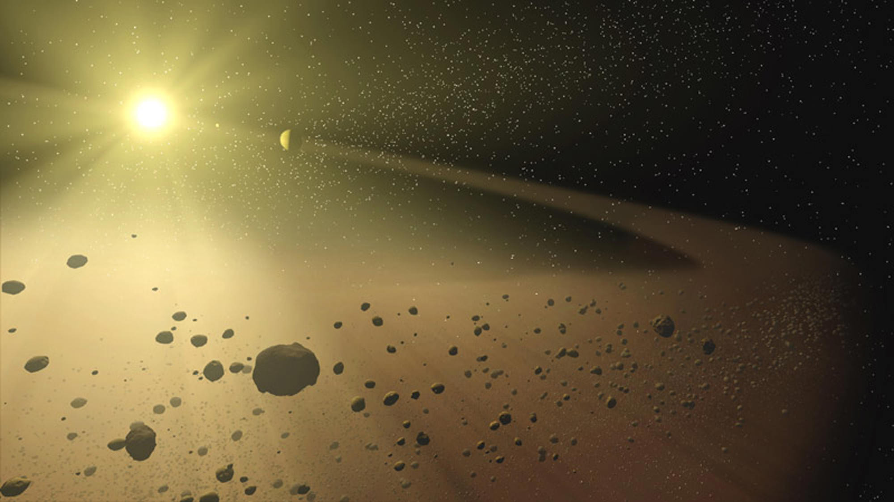
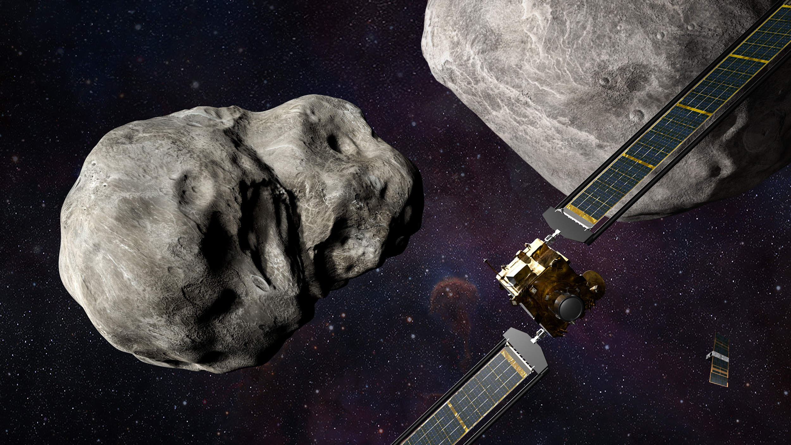
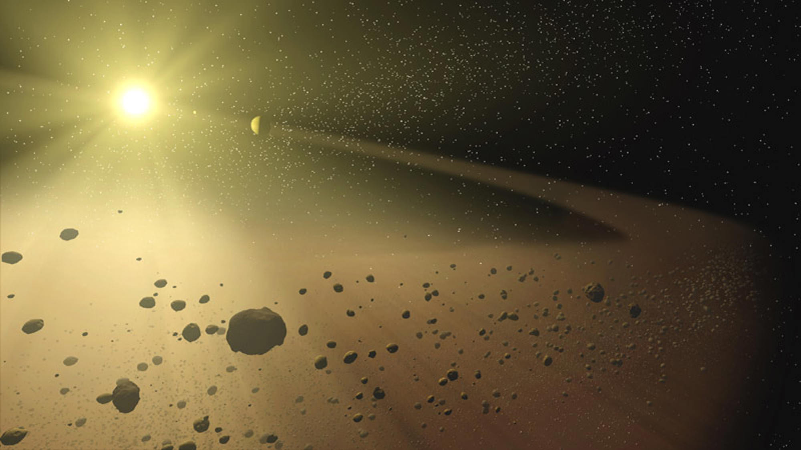
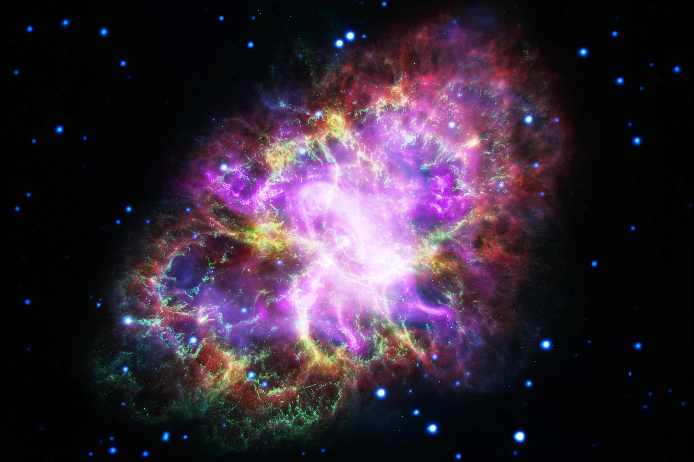
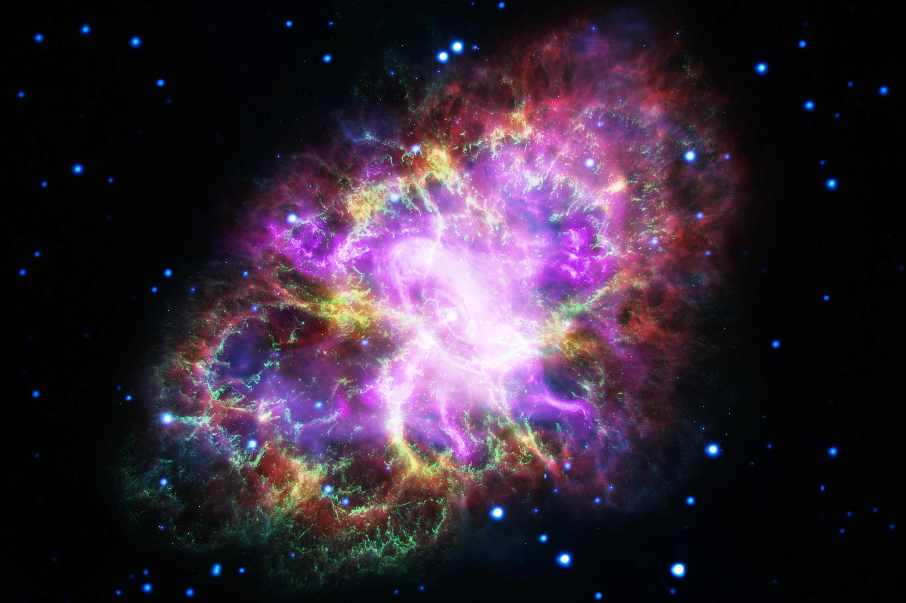
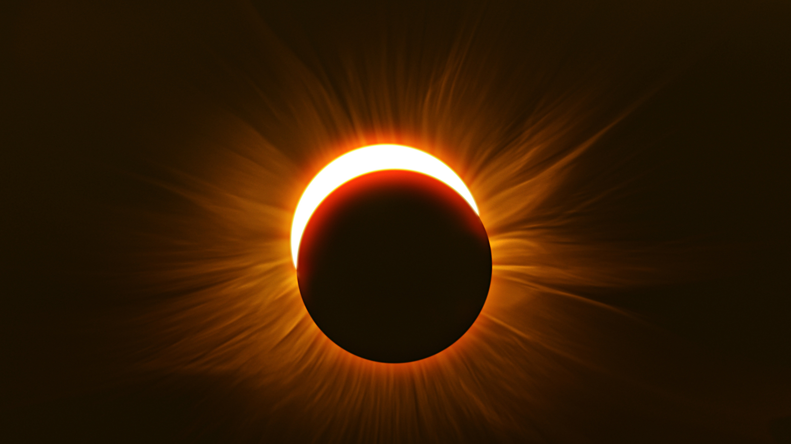
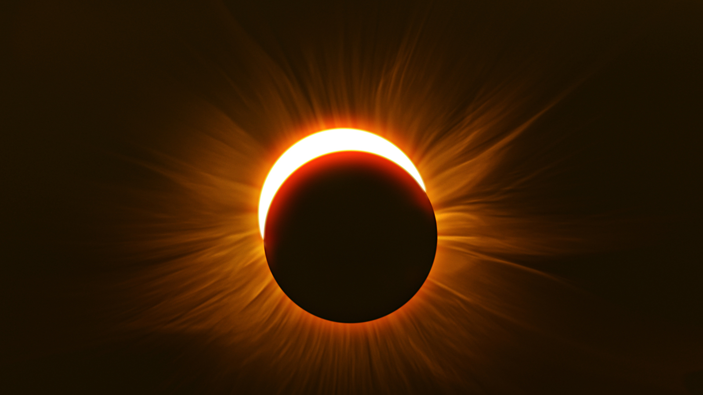

Stars
A star is an astronomical object comprising a luminous spheroid of plasma held together by self-gravity. The nearest star to Earth is the Sun. Many other stars are visible to the naked eye at night, but their immense distances from Earth make them appear as fixed points of light. The most prominent stars have been categorised into constellations and asterisms, and many of the brightest stars have proper names. Astronomers have assembled star catalogues that identify the known stars and provide standardized stellar designations. The observable universe contains an estimated 1022 to 1024 stars. Only about 4,000 of these stars are visible to the naked eye, all within the Milky Way galaxy.
Click to Read More
A star's life begins with the gravitational collapse of a gaseous nebula of material composed primarily of hydrogen, along with helium and trace amounts of heavier elements. Its total mass is the main factor determining its evolution and eventual fate. A star shines for most of its active life due to the thermonuclear fusion of hydrogen into helium in its core. This process releases energy that traverses the star's interior and radiates into outer space. At the end of a star's lifetime, its core becomes a stellar remnant: a white dwarf, a neutron star, or—if it is sufficiently massive—a black hole.
Stellar nucleosynthesis in stars or their remnants creates almost all naturally occurring chemical elements heavier than lithium. Stellar mass loss or supernova explosions return chemically enriched material to the interstellar medium. These elements are then recycled into new stars. Astronomers can determine stellar properties—including mass, age, metallicity (chemical composition), variability, distance, and motion through space—by carrying out observations of a star's apparent brightness, spectrum, and changes in its position in the sky over time.
Stars can form orbital systems with other astronomical objects, as in the case of planetary systems and star systems with two or more stars. When two such stars have a relatively close orbit, their gravitational interaction can significantly impact their evolution. Stars can form part of a much larger gravitationally bound structure, such as a star cluster or a galaxy.
Learn More About Stars on Wikipedia


Minimize
Moons
The Moon is Earth's only natural satellite. Its diameter is about one-quarter of Earth's (comparable to the width of Australia), making it the fifth largest satellite in the Solar System and the largest and most massive relative to its parent planet. It is larger than all known dwarf planets in the Solar System. The Moon is a planetary-mass object with a differentiated rocky body, making it a satellite planet under the geophysical definitions of the term. It lacks any significant atmosphere, hydrosphere, or magnetic field. Its surface gravity is about one-sixth of Earth's at 0.1654 g—Jupiter's moon Io is the only satellite in the Solar System known to have a higher surface gravity and density.
Click to Read More
The Moon orbits Earth at an average distance of 384,400 km (238,900 mi), or about 30 times Earth's diameter. Its gravitational influence is the main driver of Earth's tides and very slowly lengthens Earth's day. The Moon's orbit around Earth has a sidereal period of 27.3 days. During each synodic period of 29.5 days, the amount of visible surface illuminated by the Sun varies from none up to 100%, resulting in lunar phases that form the basis for the months of a lunar calendar. The Moon is tidally locked to Earth, which means that the length of a full rotation of the Moon on its own axis causes its same side (the near side) to always face Earth, and the somewhat longer lunar day is the same as the synodic period. However, 59% of the total lunar surface can be seen from Earth through cyclical shifts in perspective known as libration.
The most widely accepted origin explanation posits that the Moon formed 4.51 billion years ago, not long after Earth, out of the debris from a giant impact between the planet and a hypothesized Mars-sized body called Theia. It then receded to a wider orbit because of tidal interaction with the Earth. The near side of the Moon is marked by dark volcanic maria ("seas"), which fill the spaces between bright ancient crustal highlands and prominent impact craters. Most of the large impact basins and mare surfaces were in place by the end of the Imbrian period, some three billion years ago. The lunar surface is fairly non-reflective, with the reflectance of lunar soil being comparable to that of asphalt. However, due to its large angular diameter, the full moon is the brightest celestial object in the night sky. The Moon's apparent size is nearly the same as that of the Sun, allowing it to cover the Sun almost completely during a total solar eclipse.
Both the Moon's prominence in Earth's sky and its regular cycle of phases have provided cultural references and influences for human societies throughout history. Such influences can be found in language, calendar systems, art, and mythology. The first artificial object to reach the Moon was the Soviet Union's uncrewed Luna 2 spacecraft in 1959; this was followed by the first successful soft landing by Luna 9 in 1966. The only human lunar missions to date have been those of the United States' Apollo program, which landed twelve men on the surface between 1969 and 1972. These and later uncrewed missions returned lunar rocks that have been used to develop a detailed geological understanding of the Moon's origins, internal structure, and subsequent history. The Moon is the only celestial body visited by humans.
Learn More About Moons on Wikipedia

Minimize

Asteroids
An asteroid is a minor planet—an object that is neither a planet nor a comet—that orbits within the inner Solar System. They are rocky, metallic or icy bodies with no atmosphere. Sizes and shapes of asteroids vary significantly, ranging from 1-meter rocks to a dwarf planet almost 1000 km in diameter.
Of the roughly one million known asteroids the greatest number are located between the orbits of Mars and Jupiter, approximately 2 to 4 AU from the Sun, in the main asteroid belt. Asteroids are...
Click to Read More
Of the roughly one million known asteroids the greatest number are located between the orbits of Mars and Jupiter, approximately 2 to 4 AU from the Sun, in the main asteroid belt. Asteroids are generally classified to be of three types: C-type, M-type, and S-type. These were named after and are generally identified with carbonaceous, metallic, and silicaceous compositions, respectively. The size of asteroids varies greatly; the largest, Ceres, is almost 1,000 km (600 mi) across and qualifies as a dwarf planet. The total mass of all the asteroids combined is only 3% that of Earth's Moon. The majority of main belt asteroids follow slightly elliptical, stable orbits, revolving in the same direction as the Earth and taking from three to six years to complete a full circuit of the Sun.
Asteroids have been historically observed from Earth; the Galileo spacecraft provided the first close observation of an asteroid. Several dedicated missions to asteroids were subsequently launched by NASA and JAXA, with plans for other missions in progress. NASA's NEAR Shoemaker studied Eros, and Dawn observed Vesta and Ceres. JAXA's missions Hayabusa and Hayabusa2 studied and returned samples of Itokawa and Ryugu, respectively. OSIRIS-REx studied Bennu, collecting a sample in 2020 to be delivered back to Earth in 2023. NASA's Lucy, launched in 2021, will study ten different asteroids, two from the main belt and eight Jupiter trojans. Psyche, scheduled for launch in 2023, will study a metallic asteroid of the same name.
Near-Earth asteroids can threaten all life on the planet; an asteroid impact event resulted in the Cretaceous–Paleogene extinction. Different asteroid deflection strategies have been proposed; the Double Asteroid Redirection Test spacecraft, or DART, was launched in 2021 and intentionally impacted Dimorphos in September 2022, successfully altering its orbit by crashing into it.
Learn More About Asteroids on Wikipedia
 



Minimize

Galaxies
A galaxy is a system of stars, stellar remnants, interstellar gas, dust, and dark matter bound together by gravity. The word is derived from the Greek galaxias (γαλαξίας), literally 'milky', a reference to the Milky Way galaxy that contains the Solar System. Galaxies, averaging an estimated 100 million stars, range in size from dwarfs with less than a hundred million stars, to the largest galaxies known – supergiants with one hundred trillion stars, each orbiting its galaxy's center of mass. Most of the mass in a typical galaxy is in the form of dark matter, with only a few percent of that mass visible in the form of stars and nebulae. Supermassive black holes are a common feature at the centres of galaxies.
Click to Read More
Galaxies are categorized according to their visual morphology as elliptical, spiral, or irregular. Many are thought to have supermassive black holes at their centers. The Milky Way's central black hole, known as Sagittarius A*, has a mass four million times greater than the Sun. As of March 2016, GN-z11 is the oldest and most distant galaxy observed. It has a comoving distance of 32 billion light-years from Earth, and is seen as it existed just 400 million years after the Big Bang.
It is estimated that there are roughly 200 billion galaxies (2×1011) in the observable universe. Most galaxies are 1,000 to 100,000 parsecs in diameter (approximately 3,000 to 300,000 light years) and are separated by distances on the order of millions of parsecs (or megaparsecs). For comparison, the Milky Way has a diameter of at least 26,800 parsecs (87,400 ly) and is separated from the Andromeda Galaxy (with diameter of about 152,000 ly), its nearest large neighbor, by 780,000 parsecs (2.5 million ly.)
The space between galaxies is filled with a tenuous gas (the intergalactic medium) with an average density of less than one atom per cubic meter. Most galaxies are gravitationally organized into groups, clusters and superclusters. The Milky Way is part of the Local Group, which it dominates along with Andromeda Galaxy. The group is part of the Virgo Supercluster. At the largest scale, these associations are generally arranged into sheets and filaments surrounded by immense voids. Both the Local Group and the Virgo Supercluster are contained in a much larger cosmic structure named Laniakea.
Learn More About Galaxies on Wikipedia


Minimize

Nebulas
A nebula ('cloud' or 'fog' in Latin; pl. nebulae, nebulæ or nebulas) is a distinct luminescent part of interstellar medium, which can consist of ionized, neutral or molecular hydrogen and also cosmic dust. Nebulae are often star-forming regions, such as in the "Pillars of Creation" in the Eagle Nebula. In these regions, the formations of gas, dust, and other materials "clump" together to form denser regions, which attract further matter, and eventually will become dense enough to form stars. The remaining material is then thought to form planets and other planetary system objects.
Click to Read More
Most nebulae are of vast size; some are hundreds of light-years in diameter. A nebula that is visible to the human eye from Earth would appear larger, but no brighter, from close by. The Orion Nebula, the brightest nebula in the sky and occupying an area twice the angular diameter of the full Moon, can be viewed with the naked eye but was missed by early astronomers.[7] Although denser than the space surrounding them, most nebulae are far less dense than any vacuum created on Earth – a nebular cloud the size of the Earth would have a total mass of only a few kilograms. Earth's air has a density of approximately 1019 molecules per cubic centimeter; by contrast the densest nebulae can have densities of 10,000 molecules per cubic centimeter. Many nebulae are visible due to fluorescence caused by embedded hot stars, while others are so diffused that they can be detected only with long exposures and special filters. Some nebulae are variably illuminated by T Tauri variable stars.
Originally, the term "nebula" was used to describe any diffused astronomical object, including galaxies beyond the Milky Way. The Andromeda Galaxy, for instance, was once referred to as the Andromeda Nebula (and spiral galaxies in general as "spiral nebulae") before the true nature of galaxies was confirmed in the early 20th century by Vesto Slipher, Edwin Hubble and others. Edwin Hubble discovered that most nebulae are associated with stars and illuminated by starlight. He also helped categorize nebulae based on the type of light spectra they produced.
Learn More About Nebulas on Wikipedia

 

Minimize
Eclipses
An eclipse is an astronomical event that occurs when an astronomical object or spacecraft is temporarily obscured, by passing into the shadow of another body or by having another body pass between it and the viewer. This alignment of three celestial objects is known as a syzygy.[1] Apart from syzygy, the term eclipse is also used when a spacecraft reaches a position where it can observe two celestial bodies so aligned. An eclipse is the result of either an occultation (completely hidden) or a transit (partially hidden).
Click to Read More
The term eclipse is most often used to describe either a solar eclipse, when the Moon's shadow crosses the Earth's surface, or a lunar eclipse, when the Moon moves into the Earth's shadow. However, it can also refer to such events beyond the Earth–Moon system: for example, a planet moving into the shadow cast by one of its moons, a moon passing into the shadow cast by its host planet, or a moon passing into the shadow of another moon. A binary star system can also produce eclipses if the plane of the orbit of its constituent stars intersects the observer's position.
For the special cases of solar and lunar eclipses, these only happen during an "eclipse season", the two times of each year when the plane of the Earth's orbit around the Sun crosses with the plane of the Moon's orbit around the Earth and the line defined by the intersecting planes points near the Sun. The type of solar eclipse that happens during each season (whether total, annular, hybrid, or partial) depends on apparent sizes of the Sun and Moon. If the orbit of the Earth around the Sun and the Moon's orbit around the Earth were both in the same plane with each other, then eclipses would happen every month. There would be a lunar eclipse at every full moon, and a solar eclipse at every new moon. And if both orbits were perfectly circular, then each solar eclipse would be the same type every month. It is because of the non-planar and non-circular differences that eclipses are not a common event. Lunar eclipses can be viewed from the entire nightside half of the Earth. But solar eclipses, particularly total eclipses occurring at any one particular point on the Earth's surface, are very rare events that can be many decades apart.
Learn More About Eclipses on Wikipedia

 

Minimize
Black Holes
A black hole is a region of spacetime where gravity is so strong that nothing, including light or other electromagnetic waves, has enough energy to escape it.[2] The theory of general relativity predicts that a sufficiently compact mass can deform spacetime to form a black hole.[3][4] The boundary of no escape is called the event horizon. Although it has a great effect on the fate and circumstances of an object crossing it, it has no locally detectable features according to general relativity.[5] In many ways, a black hole acts like an ideal black body, as it reflects no light.[6][7] Moreover, quantum field theory in curved spacetime predicts that event horizons emit Hawking radiation, with the same spectrum as a black body of a temperature inversely proportional to its mass. This temperature is of the order of billionths of a kelvin for stellar black holes, making it essentially impossible to observe directly.
Click to Read More
Objects whose gravitational fields are too strong for light to escape were first considered in the 18th century by John Michell and Pierre-Simon Laplace.[8] In 1916, Karl Schwarzschild found the first modern solution of general relativity that would characterize a black hole. David Finkelstein, in 1958, first published the interpretation of "black hole" as a region of space from which nothing can escape. Black holes were long considered a mathematical curiosity; it was not until the 1960s that theoretical work showed they were a generic prediction of general relativity. The discovery of neutron stars by Jocelyn Bell Burnell in 1967 sparked interest in gravitationally collapsed compact objects as a possible astrophysical reality. The first black hole known was Cygnus X-1, identified by several researchers independently in 1971.
Black holes of stellar mass form when massive stars collapse at the end of their life cycle. After a black hole has formed, it can grow by absorbing mass from its surroundings. Supermassive black holes of millions of solar masses (M☉) may form by absorbing other stars and merging with other black holes. There is consensus that supermassive black holes exist in the centres of most galaxies.
The presence of a black hole can be inferred through its interaction with other matter and with electromagnetic radiation such as visible light. Any matter that falls onto a black hole can form an external accretion disk heated by friction, forming quasars, some of the brightest objects in the universe. Stars passing too close to a supermassive black hole can be shredded into streamers that shine very brightly before being "swallowed."[11] If other stars are orbiting a black hole, their orbits can be used to determine the black hole's mass and location. Such observations can be used to exclude possible alternatives such as neutron stars. In this way, astronomers have identified numerous stellar black hole candidates in binary systems and established that the radio source known as Sagittarius A*, at the core of the Milky Way galaxy, contains a supermassive black hole of about 4.3 million solar masses.
Learn More About Black Holes on Wikipedia


Minimize